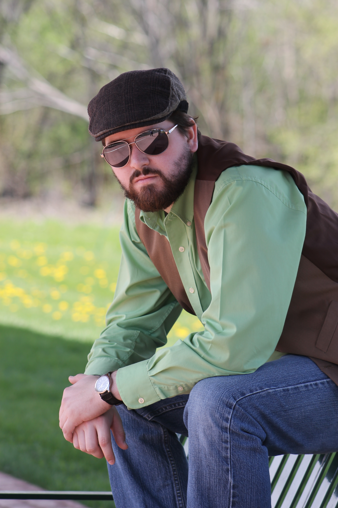
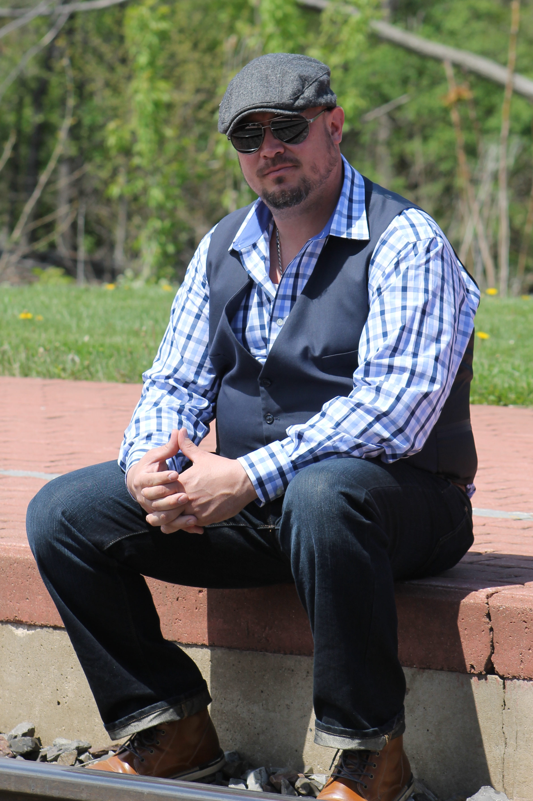
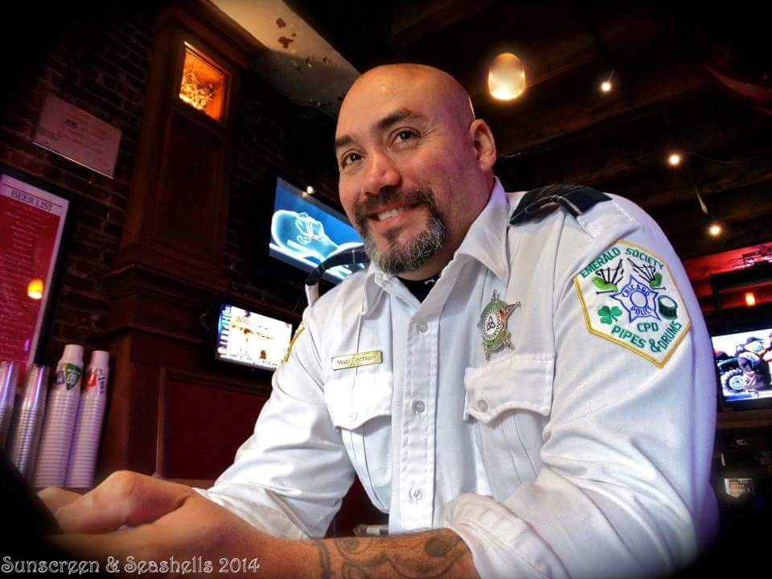

Deriving its name from the beautiful park in Dublin, St. Stephen’s Green brings awareness to Irish music with a repertoire spanning modern Irish rock while still paying tribute to traditional Irish folk and songs of rebellion. As friends who had played music together for years, Matt and Rob started the band to bring a fresh perspective to Irish music to the Chicago-land area. By blending a female’s voice over the harmony of mandolin, guitar, and bass, St. Stephen’s Green does just that.
St. Stephen’s Green borrows and modifies songs old and new; some influences include The Dubliners, The Pogues, The Saw Doctors, U2, and the Wild Colonial Bhoys. The band is always looking for Irish songs to add to the set list.
The band is being booked frequently in the Chicago area, and seeks venues in downstate Illinois and throughout the Midwest. Wherever an audience is interested in Irish music, St. Stephen’s Green is ready to play.

Liz Van Wormer
Vocals / Flute
Liz was born and raised on the South Side of Chicago. From a young age, Liz enjoyed performing and would often sing in her church’s youth choir. In 2004, she travelled to Galway and Dublin, and fell in love with Irish culture. By chance, she met Matt in 2014, and joined the lineup of St. Stephen’s Green shortly after. Liz provides the unique vocal sound and talent that Matt and Rob envisioned.
Mike Bibbi
Guitar

Dane Stier
Banjo / Mandolin
Dane grew up in rural Illinois before moving to Chicago in 2010. Although he started learning to play music at age 11, he was 17 before he bought his first guitar; months later he became lead guitarist in a Beatles-cover band. Over the years he has acquired a major interest in Bob Dylan, as well as many musicians of the American and Irish folk tradition. Dane the traditional sound to St. Stephen's Green with the banjo and mandolin.

Matthew Obrzut
Bass Guitar / Guitar / Harmonica
Matt is also from the South Side of Chicago, but takes pride in his heritage from Westport, County Mayo, Ireland. He has been playing the guitar since 18, and has been most influenced by The Beatles, Oasis, The Pogues, and Saw Doctors. His dream of starting an Irish band was realized in 2014, when he collaborated with longtime friend Rob to lay the foundation. When he is not playing the bass and acoustic guitar with St. Stephen's Green, he is probably playing rugby.

Tony Baumann
Drums / Vocals
Tony is a Chicago city boy, born and raised. Has been playing drums even before birth… according to his ma. Well versed in all areas of percussion, he has toured professionally. He has spent the last 16 years as a lead drummer in the Emerald Society Bagpipes and Drums. He loves bringing the rock to Irish folk and rebel music with any of his many drumsets.
